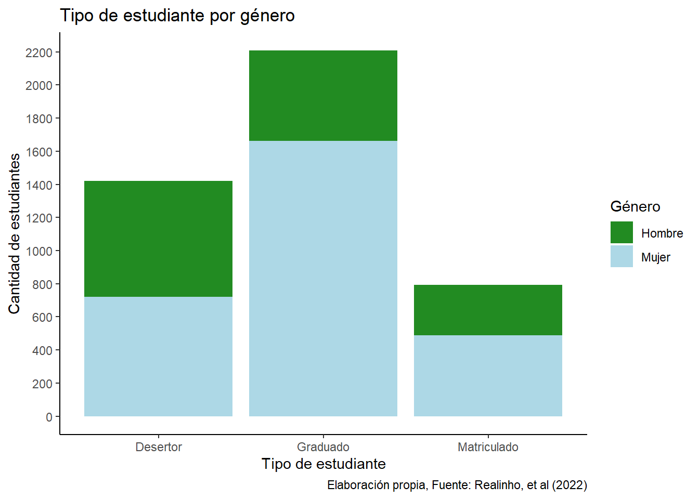
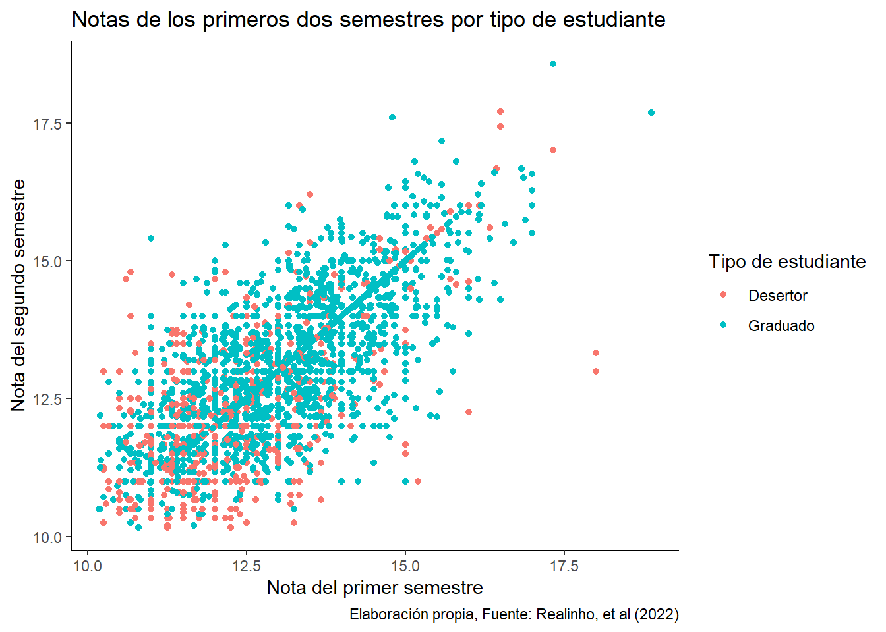

library(tidyverse)
library(janitor)
library(dplyr)
library(ggplot2)
df <- read_csv2("base_datos/universidades_europeas.csv")
df <- df %>% clean_names()3 Bitácora 3
3.1 Parte de planificación
3.1.1 Análisis de modelación
La metodología de esta investigación se basa en el análisis descriptivo de la base de datos seleccionada mediante gráficas y tablas. En este caso, la base elegida trata de las características de un grupo de estudiantes europeos en función a si estos completaron su educación superior o no. Con esto en mente, se quiere definir los factores en el área social, familiar, académica y económica que lleva a la persona estudiante a decidir terminar de ser el caso con sus estudios de carrera. Primeramente, la base de datos es cargada y se inicia la limpieza de la misma. Las variables categóricas que ofrece la base fueron simplificadas a números, cada uno con su respectivo significado. Para el posterior análisis de estas variables, se decide cambiar cada uno de estos valores numéricos con su significado. Las variables a las que se les aplicó este cambio incluyen: el estado civil, el horario de clase, si tiene o no deuda, si tiene o no beca, si paga su matrícula a tiempo, si es un estudiante internacional, la nacionalidad, la carrera, la calificación educativa tanto del padre como el de la madre y el género. Luego, se realizan los gráficos a analizar. La gráfica uno trata de comparar el nivel educativo de la madre y el padre con respecto a si su hija o hijo completó sus estudios o no. Esto con el fin de determinar si el nivel educativo de su entorno familiar tiene impacto en si la persona prioriza sus estudios o no. La segunda gráfica, muestra si tener alguna deuda con el centro educativo impacta la decisión de desertar, esto con respecto al factor económico. Asimismo, la gráfica tres, también del área económica y además del área social busca visualizar el impacto que tienen las becas con respecto al tipo de estudiante (graduado, desertor, matriculado). La gráfica cuatro, tiene como intención identificar si ser una persona internacional, y por lo tanto cambiar su entorno tanto familiar como social tiene una repercusión significativa en el estudiante. El gráfico cinco y seis toman la nota de admisión y los créditos aprobados en el primer semestre y son comparados respectivamente con el tipo de estudiante. Esto para contemplar el factor académico tal como lo quiere analizar la gráfica siete y ocho. La gráfica compara el género y el tipo, mientras que la gráfica ocho cuenta con las notas del primer año. Además, se contempló si el vivir en un lugar lejano aumentar o disminuir la cantidad de graduados para así posteriormente analizar los factores económicos, familiares y sociales que esto contempla. Las últimas dos gráficas se relacionan en contemplan la admisión al centro educativo, uno contempla la nota y la otra la edad para principalmente relacionar los factores sociales y académicos. Posteriormente, se recopiló la información en tablas. La tabla acerca del nivel de estudios del padre y de la madre ya que se tiende a indicar que un nivel educativo más alto implica un nivel socioeconómico más alto y por lo tanto ser parte esencial de los factores a contemplar en la decisión de continuar o no los estudios. Seguidamente se presenta la tabla de estudiante por nacionalidad y nota del primer semestre con la intención de evaluar si esta condición participa en un mejor o peor rendimiento académico y por ende una eventual educación terminada. La tercera tabla presentada considera el estado del estudiante y sus notas del primer y segundo semestre, para así determinar la trayectoria académica del estudiante. Para las dos últimas tablas, se consideró la gráfica 7 y 8 respectivamente y se añadieron mediaciones tales como la media, mediana, desviación estándar para cada una.
A continuación, se presentan gráficas y tablas con su respectivo código. Considere que estas son continuación de aquellas en la bitácora número dos.
df <- df %>%
mutate(target = case_when(
target == "Dropout" ~ "Desertor",
target == "Enrolled" ~ "Matriculado",
target == "Graduate" ~ "Graduado",
TRUE ~ NA
))
#GRAFICO GENDER-TARGET (BIT 3)
df<- df %>%
mutate (gender = case_when(
gender == "0" ~ "Mujer",
gender == "1" ~ "Hombre",
TRUE ~ NA
))
grafico_siete<-df %>% ggplot(aes(fill=gender, x = target))+geom_bar(stat="count")+
theme_classic()+labs(
x="Tipo de estudiante",
y= "Cantidad de estudiantes",
fill="Género",
title = "Tipo de estudiante por género",
caption = "Elaboración propia, Fuente: Realinho, et al (2022)"
)+scale_fill_manual(values = c("Mujer"="lightblue", "Hombre" = "forestgreen"))+
scale_y_continuous(breaks = seq(0, max(table(df$target)), by = 200))
print(grafico_siete)
df <- df %>%
mutate(
curricular_units_1st_sem_grade = as.numeric(gsub("(\\d+\\.\\d+).*", "\\1", curricular_units_1st_sem_grade)) %>%
round(2))
df <- df %>%
mutate(
curricular_units_2nd_sem_grade = as.numeric(gsub("(\\d+\\.\\d+).*", "\\1", curricular_units_2nd_sem_grade)) %>%
round(2))
grafico_ocho<-df %>%
filter(curricular_units_1st_sem_grade < 20,curricular_units_2nd_sem_grade > 10,
curricular_units_2nd_sem_grade < 20,curricular_units_1st_sem_grade > 10, target %in% c("Graduado", "Desertor")) %>%
ggplot(aes(x=curricular_units_1st_sem_grade, y=curricular_units_2nd_sem_grade,colour =target))+
geom_point()+theme_classic()+labs(
x="Nota del primer semestre",
y="Nota del segundo semestre",
title = "Notas de los primeros dos semestres por tipo de estudiante",
color="Tipo de estudiante",
caption = "Elaboración propia, Fuente: Realinho, et al (2022)"
)
print(grafico_ocho)
3.1.1.1 Construcción de fichas de resultados
1.FICHA 6
gráfica 7
Nombre de su hallazgo/resultado: Relación significativa entre el género de los estudiantes y su permanencia en la carrera
Resumen en una oración: la cantidad de estudiantes mujeres graduadas es significativamente mayor a la cantidad de estudiantes hombres graduados
Principal característica: En este gráfico se observan dos variables categóricas, el género y el tipo de estudiante
Problemas o posibles desafíos: Al considerar sólo dos géneros, existe una parte de la población que queda totalmente fuera del estudio. Además, el análisis de este resultado considera una investigación mucho más social y cultural. Esto dado que distintas culturas y constructos sociales imponen ciertas restricciones y expectativas ante la educación para cada género.
Resumen en un párrafo: Este gráfico ilustra si el género juega un papel fundamental en la educación superior. Se puede concluir que de las personas graduadas la mayor cantidad son mujeres. La diferencia de este número es significativa en comparación de los hombres en la misma categoría. Según la investigación realizada por Landeta, et al (2011) una de las variables con mayor influencia en el rendimiento académico probó ser el género, siendo las mujeres aquellas con un rendimiento académico mayor en comparación de sus compañeros hombres. Exactamente lo que está siendo visualizado en el gráfico. Además, se entiende que no hay una diferencia significativa entre géneros a la hora de desertar.
- FICHA 7
gráfica 8
Nombre de su hallazgo/resultado: Vínculo entre las notas del primer año y la decisión de continuar sus estudios superiores o desertar
Resumen en una oración: Entre más alta sea la nota tanto del primer como del segundo semestre, es más posible que el estudiante se gradúe.
Principal característica: Se considera la nota promedio de cada semestre, donde la nota más alta es 20 puntos
Problemas o posibles desafíos: En esta gráfica solo se consideran las notas del primer año, lo que no es significativo al rendimiento académico a través de toda la vida universitaria de cada estudiante. Las adaptaciones de cada persona a un ambiente nuevo, dado que es el primer año, varían. Solo considerar estas dos calificaciones puede ser insuficiente para analizar problemas en el desempeño académico
Resumen en un párrafo: Basado en este gráfico, es posible concluir que los estudiantes con notas más altas durante tanto el primer como el segundo semestre son aquellos que con mayor frecuencia se gradúan. Es decir, aquellos estudiantes con notas más bajas son más propensos a abandonar la educación superior. Esta tendencia, de mejores notas en las personas que eventualmente se gradúan se expone tanto por Martinez-Otero (2009), como por Lobos y Rodriguez (2022). Aunque la importancia que ambos textos le dan a este factor varía, ambos están de acuerdo en que el rendimiento académico si forma parte de la decisión que es desertar. Además, Landeta, et al (2011) propone que el promedio (nota) y el género son las variables con una mayor correlación conforme al rendimiento académico.